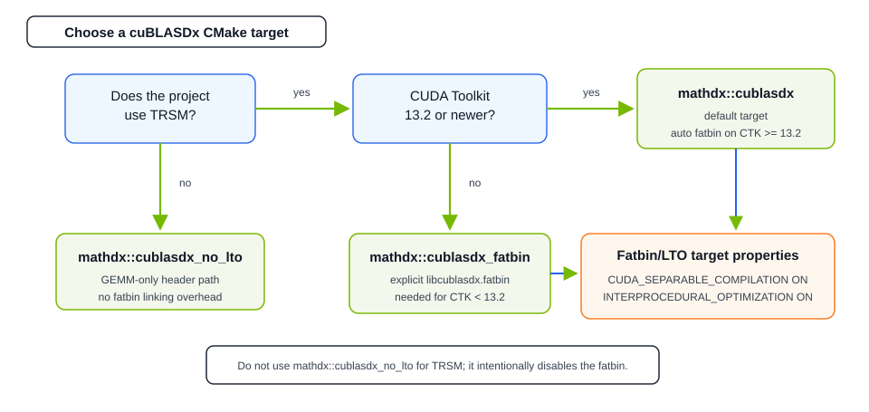

Quick Installation Guide#
cuBLASDx is distributed as part of the MathDx package. To download the latest release of the MathDx package, including cuBLASDx, visit Math Dx downloads.
Note
MathDx package contains:
cuBLASDx for selected linear algebra functions like General Matrix Multiplication (GEMM),
cuFFTDx for FFT calculations,
cuSolverDx for selected dense matrix factorization and solve routines,
cuRANDDx for random number generation.
nvCOMPDx for compression and decompression of data on GPU.
MathDx libraries are designed to work together in a single project.
Note that for a project where multiple device extensions libraries are used all the libraries must come from the same MathDx release. Examples of such fusion are included in the package.
cuBLASDx In Your Project#
To use the cuBLASDx library, users need to add the include directory containing cublasdx.hpp and its dependencies, commonDx and
CUTLASS, which are provided with the MathDx package, and link against the cuBLASDx LTO (Link Time Optimization) library.
cuBLASDx ships this as a fatbin binary, libcublasdx.fatbin, which contains only device code and is host-platform agnostic
(usable on both x86_64 and AARCH64). Alternatively, users may skip linking and use a header-only path; that mode supports only
GEMM (TRSM requires the LTO binary to be linked).
All requirements are listed in the Requirements section.
GEMM only (no TRSM) — include the directories and compile directly:
nvcc -std=c++17 -arch=sm_XY (...) -I<mathdx_include_dir> -I<cutlass_include_dir> <your_source_file>.cu -o <your_binary>
With TRSM — LTO fatbin binary linking is required at both compile and link time. The -dlto flag at link time instructs the linker
to retrieve the LTO IR from the fatbin and perform cross-module optimization during code generation. The lto_XY code target
must match the target architecture used by -arch=sm_XY.
nvcc -std=c++17 -arch=sm_XY -rdc=true \
--generate-code arch=compute_XY,code=lto_XY \
(...) \
-I<mathdx_include_dir> -I<cutlass_include_dir> \
<your_source_file>.cu -o <your_binary> \
libcublasdx.fatbin -dlto
The libcublasdx.fatbin file is located in:
<your_directory>/nvidia/mathdx/yy.mm/lib/
After unpacking the MathDx YY.MM package tarball into <your_directory>, the cublasdx.hpp file will be available at the following locations:
<your_directory>/nvidia/mathdx/yy.mm/include/
The commonDx headers will be available at:
<your_directory>/nvidia/mathdx/yy.mm/include/
The CUTLASS headers will be available at:
<your_directory>/nvidia/mathdx/yy.mm/external/cutlass/include/
cuBLASDx In Your CMake Project#
The MathDx package provides configuration files to simplify the integration of cuBLASDx into CMake projects. After
locating mathdx using find_package, link the appropriate target to your executable or library (see Defined Targets below).
The default mathdx::cublasdx target enables all library functionality and automatically links the LTO fatbin binary. A special header-only target is available for projects that only need GEMM.
find_package(mathdx REQUIRED COMPONENTS cublasdx CONFIG)
target_link_libraries(YourProgram mathdx::cublasdx)
# LTO fatbin binary linking requires separable compilation and interprocedural optimization.
# CUDA_SEPARABLE_COMPILATION ON enables relocatable device code (-rdc=true).
# INTERPROCEDURAL_OPTIMIZATION ON enables LTO at link time (-dlto), which is required
# so the linker can pull the TRSM implementation out of the fatbin.
set_target_properties(YourProgram
PROPERTIES
CUDA_SEPARABLE_COMPILATION ON
INTERPROCEDURAL_OPTIMIZATION ON) # requires CMake 3.25+
You can specify the path to the MathDx package using the PATHS option:
find_package(mathdx REQUIRED COMPONENTS cublasdx CONFIG PATHS "<your_directory>/nvidia/mathdx/yy.mm/")
Alternatively, set mathdx_ROOT during CMake configuration of your project:
cmake -Dmathdx_ROOT="<your_directory>/nvidia/mathdx/yy.mm/" (...)
NVCC Bug workaround for CUDA Toolkit < 13.2
CUDA Toolkit < 13.2 — use
mathdx::cublasdx_fatbininstead ofmathdx::cublasdx. The fatbin target explicitly linkslibcublasdx.fatbinand transitively provides all headers. The sameCUDA_SEPARABLE_COMPILATIONandINTERPROCEDURAL_OPTIMIZATIONproperties are required on the consuming target.
GEMM only (opt-out of LTO)
GEMM only (opt-out of LTO) — if your project uses only GEMM and you want to avoid the LTO fatbin binary linking overhead entirely, link against
mathdx::cublasdx_no_ltoinstead. This header-only target definesCUBLASDX_NO_FATBIN_AVAILABLE, which produces astatic_assertif TRSM is accidentally used:find_package(mathdx REQUIRED COMPONENTS cublasdx CONFIG) target_link_libraries(YourProgram mathdx::cublasdx_no_lto)
Minimal GEMM-Only Project#
For a first standalone GEMM program, use a single CUDA source file and the header-only GEMM target. This avoids sample helper headers and skips the TRSM fatbin/LTO setup.
cmake_minimum_required(VERSION 3.25)
project(cublasdx_gemm_minimal LANGUAGES CXX CUDA)
find_package(mathdx REQUIRED COMPONENTS cublasdx CONFIG)
add_executable(gemm main.cu)
target_link_libraries(gemm PRIVATE mathdx::cublasdx_no_lto)
target_compile_features(gemm PRIVATE cxx_std_17)
set_target_properties(gemm
PROPERTIES
CUDA_ARCHITECTURES 89-real)
Configure it by pointing CMake at the unpacked MathDx package:
cmake -S . -B build -Dmathdx_ROOT="<your_directory>/nvidia/mathdx/yy.mm/"
cmake --build build -j
Use mathdx::cublasdx instead of mathdx::cublasdx_no_lto if the same project later adds TRSM or another feature
that requires the pre-built cuBLASDx fatbin. See Defined Targets for the target tradeoffs.

Defined Targets#
mathdx::cublasdxDefault cuBLASDx target. Propagates include directories, commonDx, CUTLASS, and C++17. On CUDA Toolkit ≥ 13.2 the LTO fatbin is linked automatically, enabling both GEMM and TRSM. Requires
CUDA_SEPARABLE_COMPILATION ONandINTERPROCEDURAL_OPTIMIZATION ONon the consuming target. On CUDA Toolkit < 13.2 definesCUBLASDX_NO_FATBIN_AVAILABLE— usemathdx::cublasdx_fatbininstead.mathdx::cublasdx_fatbinFatbin target for CUDA Toolkit < 13.2. Links
libcublasdx.fatbin(device-only, host-platform agnostic) explicitly. RequiresCUDA_SEPARABLE_COMPILATION ONandINTERPROCEDURAL_OPTIMIZATION ONon the consuming target. Replacesmathdx::cublasdx— do not link both.mathdx::cublasdx_no_ltoGEMM-only header-only target without any fatbin. Defines
CUBLASDX_NO_FATBIN_AVAILABLE, which produces astatic_assertif TRSM is used. Use this to opt out of LTO fatbin binary linking overhead when only GEMM is needed.
CMake < 3.25 Workaround#
INTERPROCEDURAL_OPTIMIZATION requires CMake 3.25. For older CMake versions, replace that property with explicit flags:
target_compile_options(my_kernel PRIVATE
"$<$<COMPILE_LANGUAGE:CUDA>:SHELL:-rdc=true>"
"$<$<COMPILE_LANGUAGE:CUDA>:SHELL:--generate-code arch=compute_90,code=lto_90>"
)
target_link_options(my_kernel PRIVATE $<DEVICE_LINK:-dlto>)
Adjust compute_90 / lto_90 to match your target CUDA architecture (90 value is only for demonstration purposes).
Using A Custom CUTLASS#
CUTLASS is NVIDIA’s open-source C++ template library for high-performance linear algebra on GPUs. cuBLASDx uses CUTLASS internally for tensor layout primitives (CuTe). The MathDx package ships a compatible version, but you may substitute your own as long as it meets the requirements listed in the Requirements section. This can be done in two ways:
Define the
NvidiaCutlass_ROOTCMake variable or environment variable to point to the directory containing the installed CUTLASS. This allows MathDx to locate theNvidiaCutlasspackage.Define the
mathdx_CUTLASS_ROOTCMake variable or environment variable to point to the directory containing the CUTLASS headers.
When using cuBLASDx through CMake, the CUTLASS version is detected automatically and the
CUBLASDX_CUTLASS_VERSION macro (encoded as major * 10000 + minor * 100 + patch) is
defined for you.
When compiling with NVRTC or any other path that bypasses CMake, you must define
CUBLASDX_CUTLASS_VERSION before including any cuBLASDx header so that the library
selects the correct code-path for the CUTLASS API in use:
#define CUBLASDX_CUTLASS_VERSION 40401 // e.g. CUTLASS 4.4.1
#include <cublasdx.hpp>
Defined Variables#
mathdx_cublasdx_FOUND,cublasdx_FOUNDTrue if cuBLASDx was found.
cublasdx_INCLUDE_DIRScuBLASDx include directories.
mathdx_cutlass_INCLUDE_DIR,cublasdx_cutlass_INCLUDE_DIRCUTLASS include directory.
mathdx_INCLUDE_DIRSMathDx include directories.
cublasdx_FATBINPath to the
libcublasdx.fatbinlibrary file.mathdx_VERSIONMathDx package version number in
X.Y.Zformat.cublasdx_VERSIONcuBLASDx version number in
X.Y.Zformat.